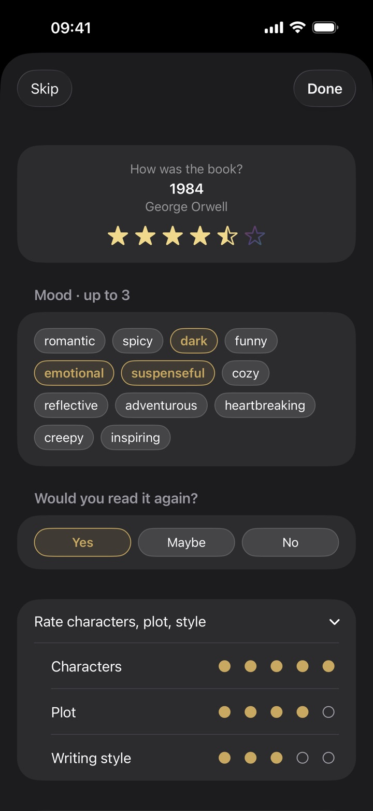
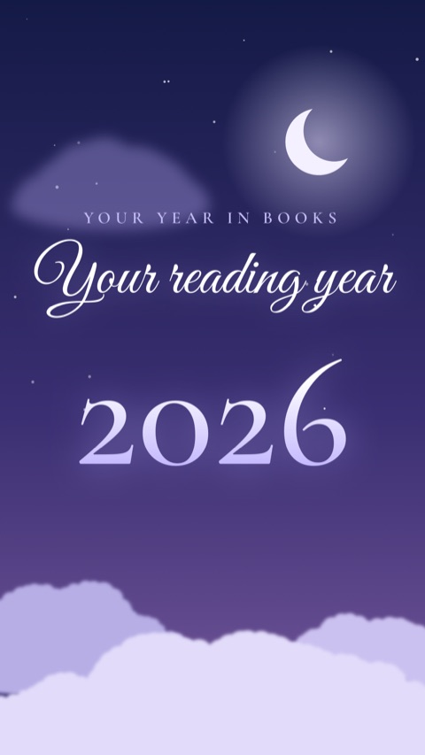
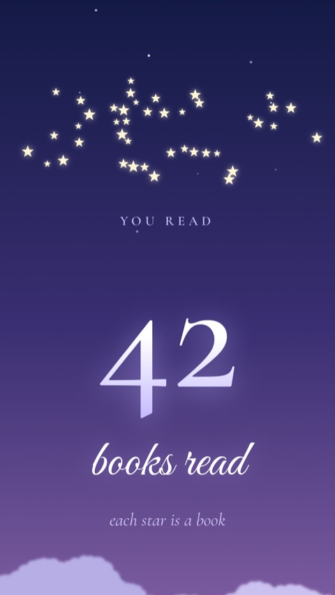
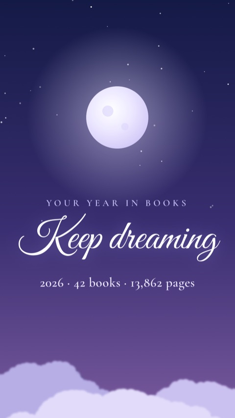
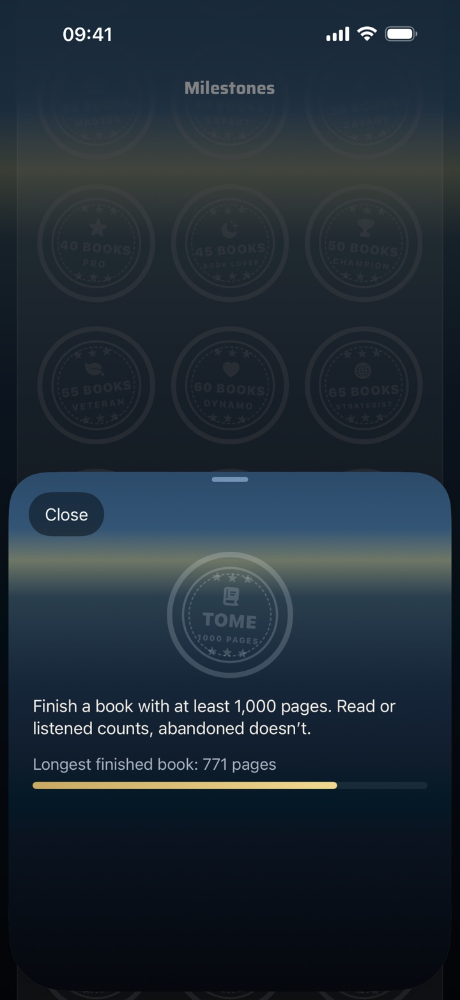

What this update is about
BookSafe 1.11 asks how a book really was: capture your impression, find books again by mood and share your reading year in the new “Dreamy” design. On top of that come your oldest unread book in the film and five challenge stamps that explain how to earn them.
This page describes the changes in more detail than fits into the App Store release notes.
Version 1.11 · released 7 November 2026
New
1My Impression
Stars don’t say everything. When you finish a book, you can now capture how it was: up to three moods, from suspenseful and cozy to heartbreaking, scores for characters, plot and writing style, whether you’d read it again, and a note. Your impression appears in the book details, and the library filters by mood and “Read again”. If you’d rather not see the sheet after finishing a book, you can turn it off in Settings.

2The “Dreamy” design
A moonlit night as the fifth film in Year in Review: your books rest on clouds, numbers turn into stars, and the crescent grows into a full moon. The same look is also the sixth reading update design.



3Your oldest unread book
The Year in Review film now shows the book that has been waiting longest. In the book details you can also see how many days a book has been on your TBR. The day you added it to BookSafe counts.
4Share the film as images
Besides the video, you can now also share your film as individual images, up to ten pages at once.
5Five challenge stamps
New in your stamp book: Tome for a book with at least 1000 pages, Sprint for a book in under three hours, measured with the reading timer, TBR Rescue for a book that sat unread for at least a year, 100 Pages in 1 Day and Book Month for four books finished in the same calendar month. Tap a stamp to see how to earn it and how far along you are. That works for every stamp in the book.

Improved
- Your ratings move to the front: tiles show the stars below the cover, and the new filter finds books with 4 or 5 stars and up, or only the excellent ones
- E-books: at the end of a reading session, enter where you are directly in percent
- Audiobooks now show “Listening” instead of “Reading”
- The CSV export now also includes your impression, custom lists, location and loans, and BookSafe recognises its own export when importing
Plus many further refinements.
Earlier versions
What BookSafe has learned since version 0.4 — from the loan tracker and iCloud sync to the Apple Watch and the Year in Review films — is collected in the archive. Together, the versions show everything the app can do today.
To the archive of earlier versions →Good to know
| Requirements | iPhone and iPad on iOS 18 or later, Apple Watch on watchOS 11 or later |
|---|---|
| Your data | No account, no tracking. Your library lives on your device and syncs through your own private iCloud. |
| Price | Free for up to 50 books. BookSafe Pro lifts the limit for good: €3.99 once, no subscription. |
| Updating | Comes through the App Store — on iPhone under “App Store → profile → update apps”. |